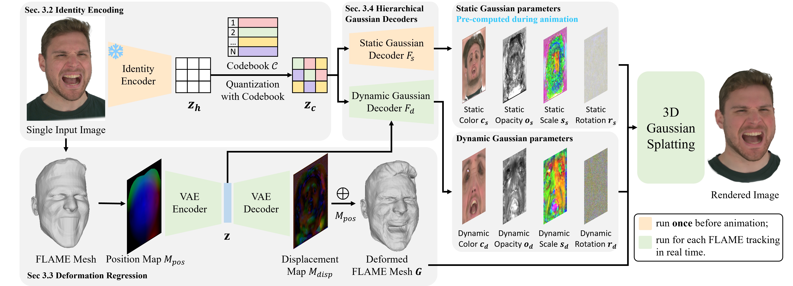

Creating photorealistic 3D head avatars from limited input has become increasingly important for applications in virtual reality, telepresence, and digital entertainment. While recent advances like neural rendering and 3D Gaussian splatting have enabled high-quality digital human avatar creation and animation, most methods rely on multiple images or multi-view inputs, limiting their practicality for real-world use. In this paper, we propose SEGA, a novel approach for Single-imagE-based 3D drivable Gaussian head Avatar creation that combines generalized prior models with a new hierarchical UV-space Gaussian Splatting framework. SEGA seamlessly combines priors derived from large-scale 2D datasets with 3D priors learned from multi-view, multi-expression, and multi-ID data, achieving robust generalization to unseen identities while ensuring 3D consistency across novel viewpoints and expressions. We further present a hierarchical UV-space Gaussian Splatting framework that leverages FLAME-based structural priors and employs a dual-branch architecture to disentangle dynamic and static facial components effectively. The dynamic branch encodes expression-driven fine details, while the static branch focuses on expression-invariant regions, enabling efficient parameter inference and pre-computation. This design maximizes the utility of limited 3D data and achieves real-time performance for animation and rendering. Additionally, SEGA performs person-specific fine-tuning to further enhance the fidelity and realism of the generated avatars. Experiments show our method outperforms state-of-the-art approaches in generalization ability, identity preservation, and expression realism, advancing one-shot avatar creation for practical applications.
